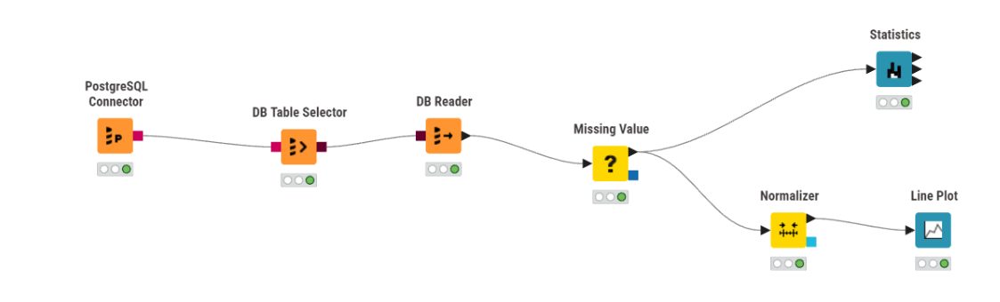
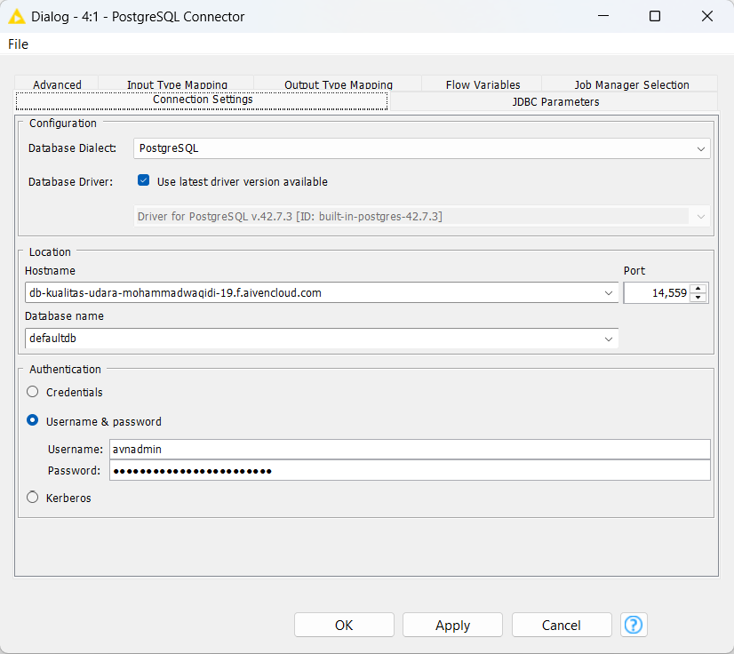
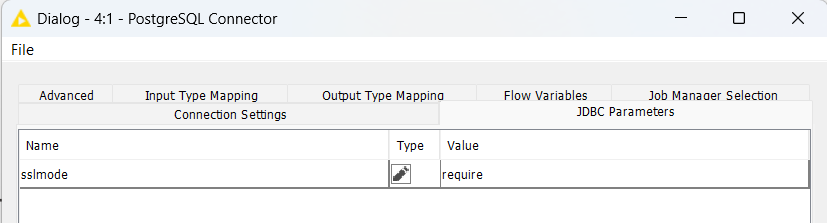
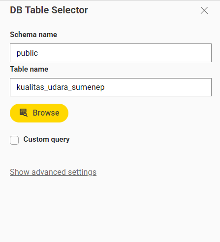
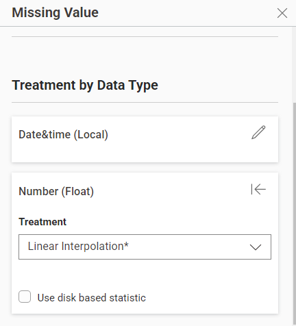
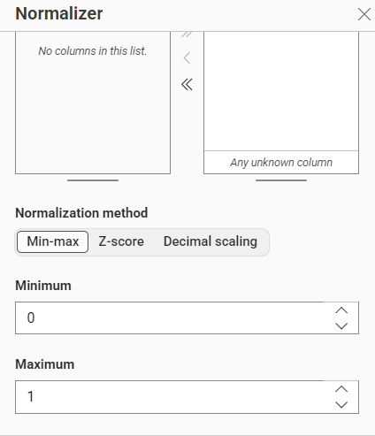
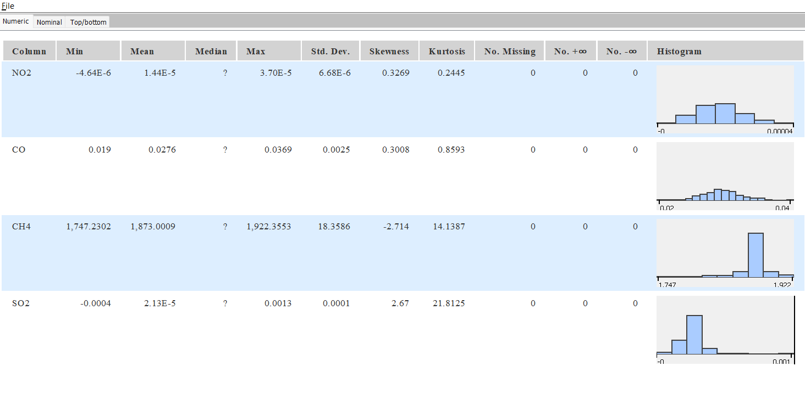
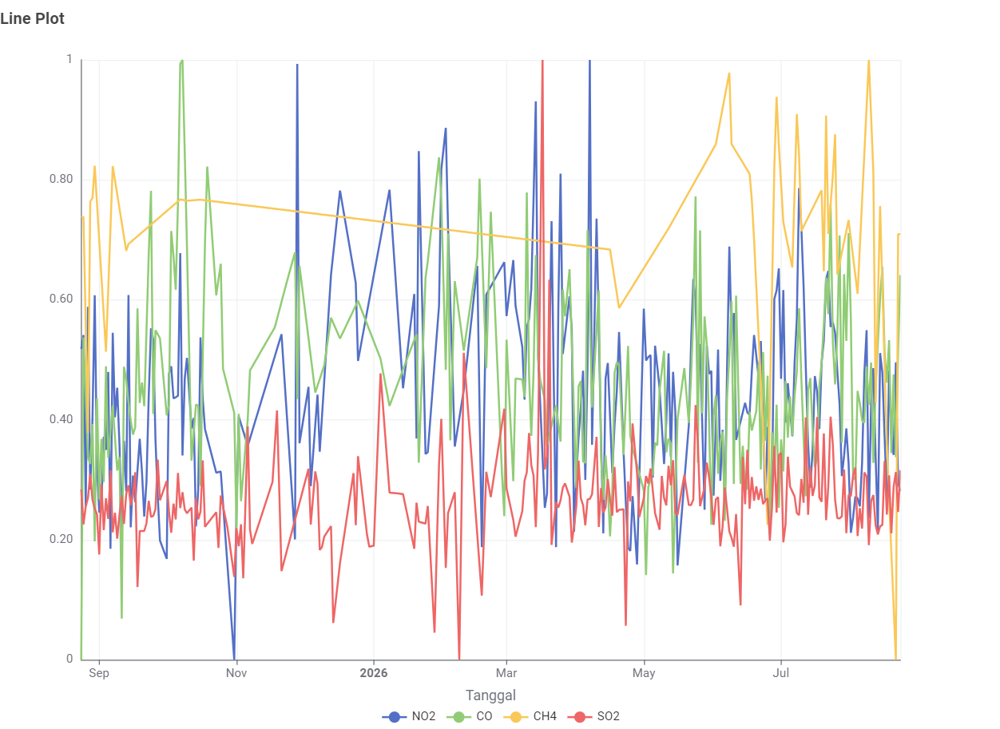

Integrasi Data Cloud (Aiven) & Analisis Statistik Data Kualitas Udara (KNIME)#
1. Memindahkan Data ke Cloud Database (Aiven PostgreSQL)#
Langkah pertama adalah memindahkan data kualitas udara (NO2, CO, CH4, SO2) dari satelit Sentinel-5P yang diolah menggunakan Python (Pandas) ke cloud database. Layanan cloud yang digunakan adalah Aiven for PostgreSQL.
Langkah-langkah:
Membuat project dan layanan PostgreSQL di dashboard Aiven menggunakan paket gratis (Free Plan).
Mendapatkan
Service URIdari dashboard Aiven sebagai kredensial koneksi.Menggunakan library
sqlalchemydi Python untuk menyambungkan dan mengirim data DataFrame (df_filtered) langsung ke database menggunakan fungsito_sql().
Code yang di gunakan
from sqlalchemy import create_engine
AIVEN_URI = "URL_AIVEN"
engine = create_engine(AIVEN_URI)
nama_tabel_di_db = "kualitas_udara_sumenep"
df_filtered.to_sql(nama_tabel_di_db, engine, if_exists='replace', index=False)
print(f"Data berhasil diunggah ke tabel '{nama_tabel_di_db}' di Aiven!")
2. Menarik Data dari Cloud ke KNIME dan Menangani Missing Value#
Setelah data tersimpan di Aiven, data tersebut ditarik ke aplikasi KNIME Analytics Platform untuk dilakukan analisis statistik deskriptif. Karena terdapat data satelit yang kosong (missing value seperti pada gas SO2), maka ditambahkan perlakuan khusus sebelum menghitung statistik.
Alur Kerja (Workflow) di KNIME:

PostgreSQL Connector: Mengkonfigurasi connection setting mulai dari host name, database name, user name, dan password serta Mengkonfigurasi parameter JDBC (
sslmode = require) dan kredensial untuk terhubung ke Aiven.

DB Table Selector: Memilih tabel
kualitas_udara_sumenepdari dalam schema public.
DB Reader: Mengunduh (membaca) data dari database cloud agar masuk ke memori fisik KNIME.
Missing Value: Menangani data yang bernilai kosong (NaN). Untuk data numerik (Float), kekosongan diatasi menggunakan metode Linear Interpolation.

Normalizer: Menskalakan nilai data seluruh gas menggunakan metode Min-Max Normalization (0 hingga 1). Hal ini sangat penting karena nilai asli gas seperti NO2 sangatlah kecil. Tanpa normalisasi, garis gas dengan nilai kecil tidak akan terlihat fluktuasinya saat digabungkan dalam satu grafik.

Statistics & Line Plot: Menghasilkan tabel ringkasan metrik statistik dan visualisasi grafik garis.


3. Penjelasan Properti Statistik KNIME#
Berikut adalah penjelasan dari masing-masing properti yang dihasilkan oleh node Statistics di KNIME:
Column: Nama atribut atau variabel yang sedang dianalisis (contoh: NO2, CO, CH4, SO2).
Min (Minimum): Nilai observasi terkecil yang ditemukan di dalam kolom tersebut.
Mean (Rata-rata): Nilai rata-rata hitung aritmetika dari seluruh baris data pada kolom tersebut.
Median (Nilai Tengah): Nilai yang membagi sekumpulan data menjadi dua bagian yang sama besar setelah data diurutkan dari yang terkecil hingga terbesar.
Max (Maximum): Nilai observasi terbesar yang ditemukan di dalam kolom tersebut.
Std. Dev. (Standar Deviasi / Simpangan Baku): Ukuran yang menunjukkan seberapa besar penyebaran (dispersi) data dari nilai rata-ratanya. Semakin besar nilainya, semakin bervariasi data tersebut.
Kurtosis: Ukuran “keruncingan” distribusi data. Menunjukkan proporsi data yang berada di bagian ekor distribusi dibandingkan dengan bagian tengahnya (berhubungan dengan adanya outlier).
Skewness (Kemencengan): Ukuran ketidaksimetrisan dari distribusi data terhadap nilai rata-ratanya. Nilai positif berarti ekor kurva memanjang ke kanan, nilai negatif memanjang ke kiri.
No. Missing: Jumlah baris/data yang kosong atau tidak memiliki nilai (Null/NaN). Berkat penggunaan node Missing Value, angka pada kolom ini bernilai 0.
No. +unlimited: Jumlah data yang memiliki nilai tak terhingga positif (positive infinity).
No. -unlimited: Jumlah data yang memiliki nilai tak terhingga negatif (negative infinity).
4. Contoh Perhitungan Manual Properti Statistik#
Untuk memahami bagaimana KNIME mendapatkan angka-angka tersebut, berikut adalah contoh perhitungan manual menggunakan sampel sederhana berupa 5 data harian acak: Sampel Data: X = {2, 4, 4, 6, 9} (sudah diurutkan). Jumlah data (n) = 5.
Min (Nilai Terkecil): Berdasarkan sampel, nilai terkecil adalah 2.
Max (Nilai Terbesar): Berdasarkan sampel, nilai terbesar adalah 9.
Median (Nilai Tengah): Karena jumlah data ganjil (5 data), median adalah nilai urutan ke-3, yaitu 4.
Mean (Rata-rata): Jumlah seluruh data dibagi banyaknya data. $\(Mean = \frac{2 + 4 + 4 + 6 + 9}{5} = \frac{25}{5} = 5\)$
Std. Dev. (Standar Deviasi Sampel): Menggunakan rumus sampel: $\(s = \sqrt{\frac{\sum_{i=1}^{n} (x_i - \bar{x})^2}{n-1}}\)$ Langkah:
Hitung selisih kuadrat setiap data terhadap Mean (5): \((2-5)^2 = 9\) \((4-5)^2 = 1\) \((4-5)^2 = 1\) \((6-5)^2 = 1\) \((9-5)^2 = 16\)
Jumlahkan hasil kuadrat tersebut: \(9 + 1 + 1 + 1 + 16 = 28\)
Bagi dengan \(n-1\) (yaitu 4): \(28 / 4 = 7\)
Akar kuadratkan: \(\sqrt{7} \approx 2.645\) Jadi, standar deviasinya adalah 2.645.